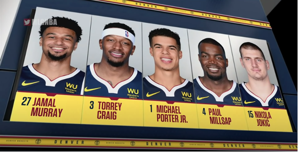
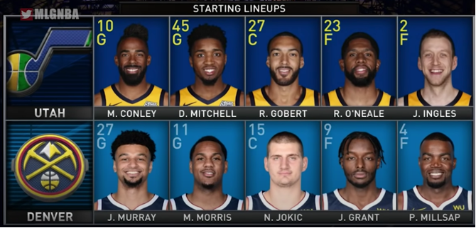
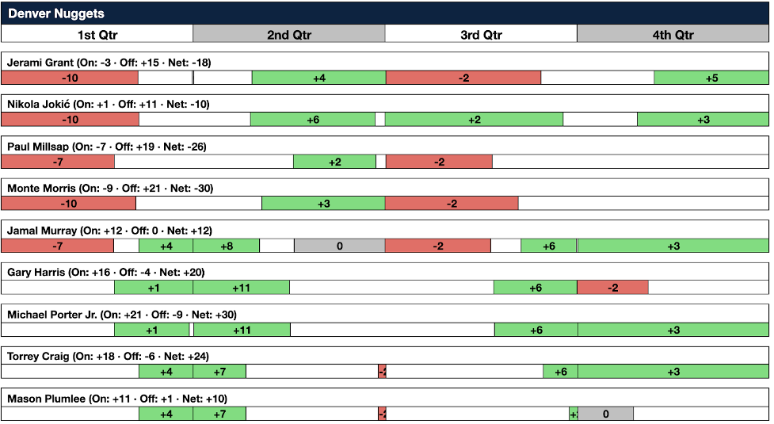
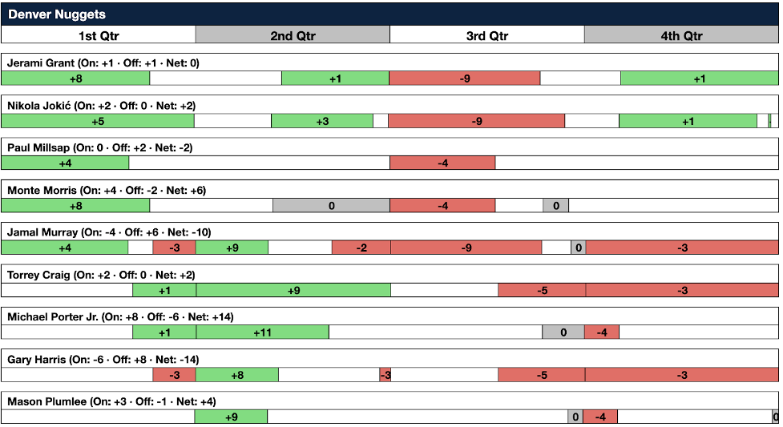
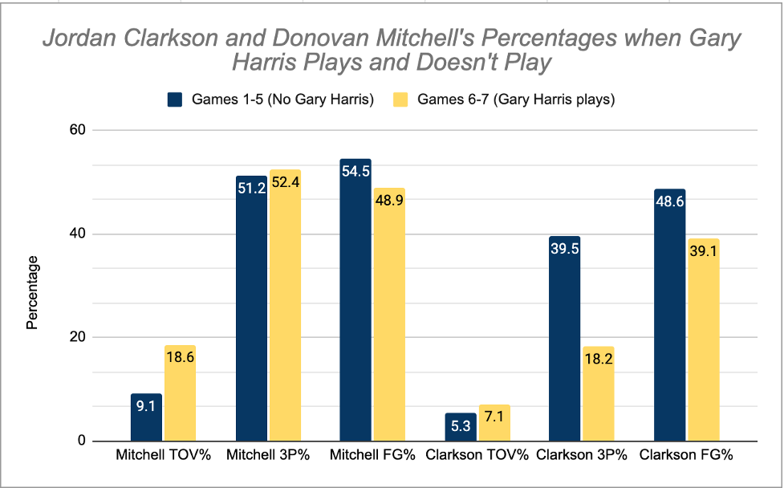

Two Quiet Factors Behind How the Nuggets beat the Jazz
By Matt Yep | November 28, 2020

A couple of months ago, Mike Malone’s Denver Nuggets clutched out a Game 7 win to cap off an impressive comeback over Quin Snyder and the Utah Jazz. With the series win under their belt, the Nuggets became only the 12th team in the NBA’s 74 year history to rally back from a 3-1 deficit in the playoffs. It was a fun series to watch, featuring two coaches notorious for their defensive-minded approach, as well as two of arguably the best big-man-scoring-guard combos in the NBA: Nikola Jokic and Jamal Murray versus Rudy Gobert and Donovan Mitchell. Much of the Nugget’s victory can certainly be attributed to the likes of Murray putting the team on his back. He averaged 31.6 points per game on 55% shooting, and torched the Jazz from deep, making 32 of his 60 treyways over the course of the series. But beyond the heroics of the Canadian point guard, there were a couple not-so-obvious-adjustments that made all the difference and do deserve some recognition. Upon taking a closer look, we see that it was the return of Gary Harris for Games 6 and 7, and Mike Malone’s decision to shake up the starting lineup that were instrumental to saving the Nuggets from elimination. Following a 37 point blowout loss in Game 3, Coach Malone in the post game interview noted that changes were certainly needed to be made. He pointed to the team’s struggles to secure defensive rebounds, prevent points in the paint, and create good looks off the bench as the main areas of improvement needed for the Nuggets to turn the series around. Two days later come tipoff of Game 4, we saw a revitalized Nuggets starting lineup. The games 1-3 starters with a frontcourt of Murray, Torrey Craig, Michael Porter Jr., and a backcourt of Paul Millsap and Jokic now shaped up in new form. Monte Morris subbed in at the 2 and Jerami Grant took the spot of MPJ. These were the starters that Coach Malone would rock with for the rest of the series.
 Perhaps the most important impact that these rotation changes had for the Nuggets was that it strengthened the second unit’s ability to produce good shots when Murray and Jokic were not both on the floor. When their starters were out, the Nuggets had previously been getting outscored by 5.3 points on average in the second quarter of Games 1-3. But their new bench rotation outplayed that of the Jazz in Games 6 and 7 when it mattered most. In Game 6, the Nuggets outscored the Jazz 31-20 in the second quarter, and in Game 7 outscored them by 9, holding the Jazz to a mere 15 second quarter points.
 Here we have charts of the Denver Nuggets players’ plus minus values during the minutes they were on the court during Games 6 and 7. From this we can see a very important second quarter trend: there’s a lot of green. And green means good. The second unit consisted of Jamal Murray, Gary Harris and Torrey Craig at the backcourt, with MPJ and Miles Plumlee at the 4 and 5. They would sub in with about four minutes left in the first quarter, and from then, the team would go on a run until about midway through the second quarter. In 18 minutes on the floor together, they secured 84.6% of the rebounds when on defense, and had the second best defensive rating of any five-man Nuggets lineup, allowing only 62.9 points per 100 Jazz possessions. With twin towers MPJ and Miles Plumlee crashing the boards, and the scrappy Harris and Craig hustling for loose ball-rebounds, this second unit effectively prevented the Jazz’ bench from getting second chance points on the offensive glass. Upon securing the boards, this same lineup then moved the ball incredibly well on offense. They assisted each other on 66.7% of their made shots, and only turned the ball over a total of 3 times in those 18 minutes. It was this team rebounding and selfless offense that helped Denver take the lead going into halftime in both Games 6 and 7. Another factor that greatly changed the tide of the series was the return of Gary Harris for the last two games. The Nugget’s best perimeter defender had not played in an NBA game since early March after injuring his right hip muscle, but felt ready to play and provide valuable minutes off the bench come Game 6. Despite rather poor shooting performances on offense, Harris’ contribution to the Nuggets comeback was made through his defensive presence and his ability to guard the Jazz’ best jump-shooters. In the 47 minutes that Harris was on the floor, the Nuggets had a team offensive rating of 106.8 and a team defensive rating of 91.3. Put in another way, his net rating was an impressive 15.5. Whereas in the 49 minutes that he was off the floor, they had an offensive rating of 111.7, a defensive rating of 107.4, and an overall net rating of 4.3. So although Harris might not have been the best offensive option for the Nuggets, his defensive impact outweighed his lackluster shooting. The Nuggets gave up 16.1 less points per 100 possessions when Gary Harris was in the ballgame. In the post-game-7-interview, Coach Malone described that what makes Gary Harris’ defense so valuable is his ability to contain his man in 1 on 1 situations. Whether it be getting a hand in their face, forcing them to shoot off balance, or blocking their shot altogether, Gary Harris is an all around pest and the Jazz guards shot at a lower clip when marked by Harris.
While Jordan Clarkson had previously burned the Nuggets seconds unit, he became a nonfactor when Gary Harris was in his face. After averaging 19.2 points per game on 48.6% shooting and 39.5% from deep in the first five games, Clarkson’s numbers fell to a mere 10.5 points per game on a dismal 18.2% from three. Harris’ impact was also apparent in his efforts to slow down Jazz’ star Donovan Mitchell. Although he couldn’t do much to cool off Mitchell’s hot hand, it is important to take note how Harris’s presence pressured Mitchell into turning the ball over. Turnovers are huge in basketball, especially in the clutch minutes of an elimination game. A turnover translates to an entire possession where your team doesn’t even get to put up a shot, and on top of that, the opponent gets to attack in transition when all your guys aren’t back on defense. This makes for huge swings in the score and changes the momentum of the game. As seen in the graph, Donovan Mitchell’s percentage of team turnovers more than doubled from 9.1% in the first five games to 18.6% in Games 6 and 7. Mitchell turned the ball over 9 times in Game 7 alone. 9 times! That’s more turnovers than you’ll see at a sloppy RSF pickup game. Check out this clip of the most pivotal turnover in Game 7. https://twitter.com/JoelRushNBA/status/1301170822355120128 Look at the pressure and hustle by Gary Harris. Even after Mitchell spun past him, Harris recovered and picked his pocket without fouling. It almost seems like he craftily let Mitchell go by him so that he could get the sneaky back-tap from behind. Better yet, forcing the Jazz to call their last timeout was indescribably huge in the long run. What it meant was that later when Gobert rebounded Torrey Craig’s biffed layup with just over 5 seconds left in the game, the Jazz didn’t have a timeout. Quin Snyder had no way to advance the ball upcourt and draw up a play. They instead had to panic and rush to get off a last second Conley heave in transition. It looked on target for the win, but rattled out, and the Nuggets completed the comeback. It is important to keep in mind the difference between correlation and causation. The starting lineup change is not the sole reason that the Nuggets played better in the second quarter. And the return of Gary Harris is not the sole reason for Clarkson’s shooting percentages to dip or Mitchell’s turnovers to increase. Nor was he the only player responsible for defending the Jazz guards. Basketball is a dynamic game with many confounding factors, many of which are hard to account for or anticipate. Some days a key player just has an off game. Some days the team’s offense clicks just like how coach drew it up. Other days you get in early foul trouble. Nevertheless, if anything, the rotation change and return of Gary Harris were momentous factors behind completing the 3-1 comeback because they gave the Nuggets a second wind. It revamped the starter and bench dynamics, bolstered the overall team defense, and added new strategies to the series that the Jazz had to adapt to. Ultimately when all else failed, the changes revitalized the Nuggets with new heart and swagger, and restored the good old Mile High basketball characterized by ball movement and hustle defense. It will be exciting to see how the Nuggets can build upon their bubble playoff run, and what kind of strategy and roster changes we’ll see from the coaches and front office to take a promising squad to the next level.